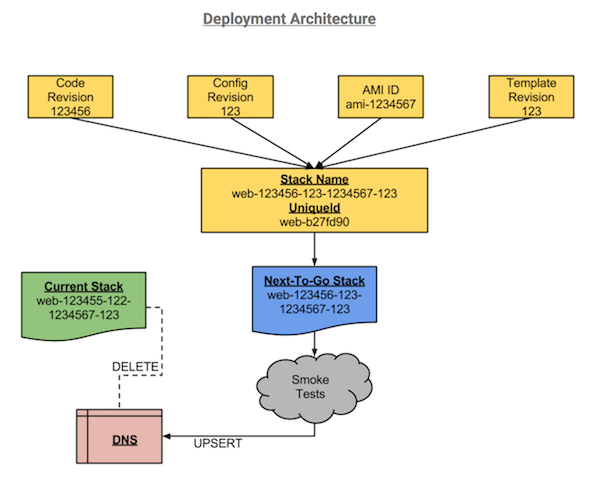

Blue/Green Deployments with AWs Cloudformation
AWS provide a wide range of high end and mature services which, when used in combination with each other could provide an enterprise a highly available, scalable and resilient infrastructure solution. Having said that, there doesn't seem to be a decent solution out there to implement blue/green deployments using AWS Cloudformation.
Here are a few things to keep in mind while implementing blue/green deployments with AWS Cloudformation.
- Try to split the cloudformation templates into smaller templates that are task based - ie vpc, network-security, web, api, microservice etc.
- Blue/Green deployments would create new resources with each deployment, it would be worth increasing autoscaling/launch configuration/stack limits to a higher, appropriate number.
Another bit and possibly the most important bit is how to make the resources in the new stack unique.
- Consider any change to the current running code and/or config as a deployment.
- Also have the cloudformation templates version-ed, so any change would mean an infrastructure level change thus requiring a deployment irrespective of code/config change.
- The last variable component was the application AMI, configured for the autoscaling group/instances. The AMI ID would change in case Amazon rolls out a new version.
Solution -> Use Git (SHAs)!
Create the stack name as <application>-<code-scm-revision>-<config-scm-revision>-<ami-id>-<template-scm-revision>. The same cloudformation template would now create a new stack each time any one or more of the four components change since the stack-name changes with them. In the case of stack resources, they have to have unique names as well otherwise the template would modify any existing resources with the same name and type. Well, one would think since we have already figured out a way to keep the stack name unique, we just use the stack-name to as a prefix or suffix to the resource names.
Agreed.
Sadly, some resources like ELBs don't support names more than 32 characters. So now the question arises around correct resource naming, yet maintaining the stack name since it'll be easier for anyone looking at the stack to identify the component versions?
Solution -> SHASUM!
Let's add a new parameter to the cloudformation template -> UniqueID, which is basically a shasum of the stackname. This UniqueID can be prefixed to the application name: <application>-<shasum{stack-name}>.
Using the first 7 or 8 chars of the shasum ensures the unique id would never be longer than say 20 characters, unless there is an atrocious application name in which needs to be re-thought. UniqueID parameter should be used as a prefix for all resource names.
Once the Blue (Next-To-Go) Stack is set up, smoke tests can be run to validate the deployment and DNS switch can be performed once the smokes turn green, to make the code available to the end user. In order to make this zero downtime even as far as DNS resolution goes, make sure to use weighted DNS.
As a step towards cost saving, don't forget to add a clean up task - automated or manual to delete old/decommissioned stacks.